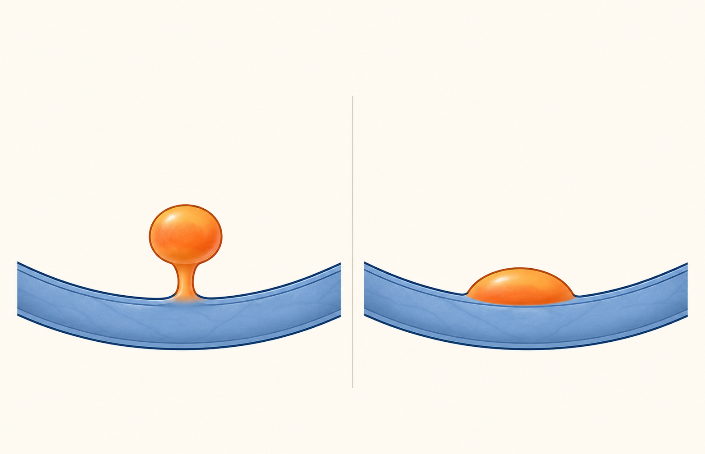

1처음 발견되면 확인할 4가지
검진 초음파에서 담낭 폴립이 보이면 아래 4가지를 기록해 두면 추적 판단이 쉬워집니다.
① 크기(mm)
가장 긴 지름. 1cm는 10mm입니다.
② 모양
자루형인지, 벽에 넓게 붙었는지 봅니다.
③ 담낭벽
두꺼워짐·불규칙이 있으면 더 주의합니다.
④ 변화
이전보다 커졌거나 모양이 달라졌는지 비교합니다.

자루형
자루가 있는 폴립
상대적으로 안심되는 모양이 많지만, 크기 변화는 확인합니다.
넓은 부착형
넓게 붙은 폴립
성장·담낭벽 변화를 더 주의해서 봅니다.
2왜 초음파로 추적하나요?
담낭 폴립의 1차 평가는 복부초음파입니다. CT/MRI가 작은 폴립을 항상 더 잘 보는 것은 아니며, 암이 의심되거나 초음파가 불충분할 때 선택적으로 고려합니다.
방사선 없음
반복 비교 쉬움
작은 변화 관찰
3수술 상담이 필요한 신호
- 15mm 이상이거나, 10-14mm에 의심 소견이 동반될 때
- 추적 중 분명히 커져 10mm 또는 15mm 경계를 넘을 때
- 넓은 바닥형, 담낭벽 두꺼워짐·불규칙이 보일 때
- 다른 원인을 배제해도 담낭 관련 증상이 지속될 때
- PSC, CA 19-9 상승, 영상에서 암 의심 시에는 개별 전문 진료
4크기와 의심 소견에 따른 추적 방향
아래는 일반 원칙입니다. 실제 간격은 영상 소견·나이·위험인자를 보고 진료실에서 정합니다.
< 6mm
관찰
의심 소견 없음대개 정기 추적이 꼭 필요하지 않거나 제한적으로 추적합니다.
6-9mm
선택 추적
의심 소견 없음위험인자와 결과지에 따라 추적 여부·간격을 개별 결정합니다.
6-9mm
밀착 추적
의심 소견 또는 50세 이상가까운 간격의 초음파 추적 또는 수술 상담을 논의합니다.
10-14mm
개별 상담
의심 소견 없음수술과 초음파 추적 중 어느 쪽이 적절한지 상담합니다.
10-14mm
수술 고려
의심 소견 있음몸 상태가 가능하다면 담낭절제술을 적극 고려합니다.
≥ 15mm
수술 권고
크기 자체로 해당수술 가능 상태라면 담낭절제술을 일반적으로 권고합니다.
* 의심 소견 = 넓은 바닥형(sessile), 담낭벽 두꺼워짐·불규칙, 추적 중 명확한 성장, 환자 위험인자 등을 종합합니다. 일부 가이드라인의 6개월·1년·2년 추적은 선택군 기준이며 모든 환자에게 일률 적용되는 규칙은 아닙니다.
5검사 전후 체크
6시간 금식 후 검사하면 담낭이 잘 펴져 더 정확합니다.
가능하면 같은 병원에서 비교하거나 이전 결과지를 가져오세요.
결과지의 크기·모양·담낭벽·추적 권고를 확인하세요.
통증은 폴립만으로 단정하지 않고 담석·위장질환도 함께 봅니다.
안내 · 본 자료의 한계
본 자료는 환자 안내용 참고자료입니다. 초음파만으로 양성·악성을 100% 구분할 수 없으며, PSC, CA 19-9 상승, 암 의심 영상, 초음파가 불충분한 경우는 개별 진료가 필요합니다. 최종 방침은 담당 의사와 상담해 정합니다.
근거: KSAR Korean J Radiol. 2025;26:102-134 · Foley KG 외 Eur Radiol. 2022;32:3358-3368 · Knight J 외 Abdom Radiol. 2024;49:3158-3165